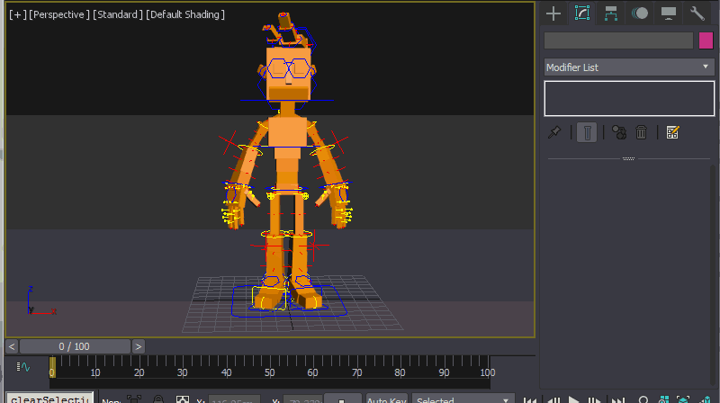
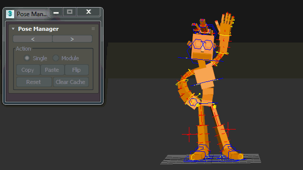
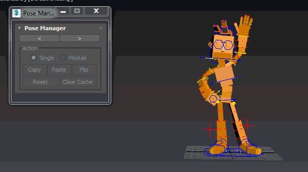
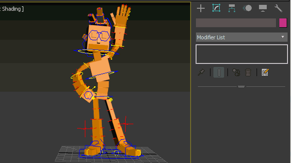
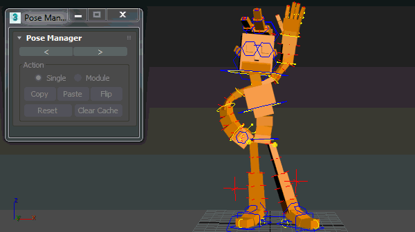
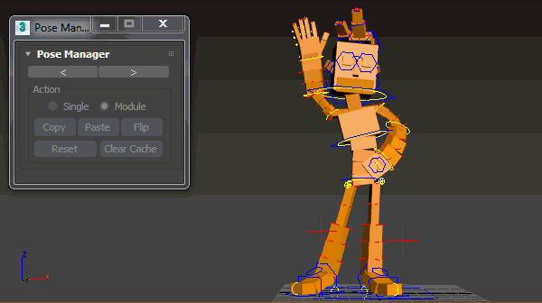
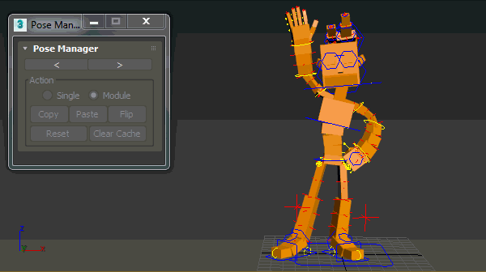
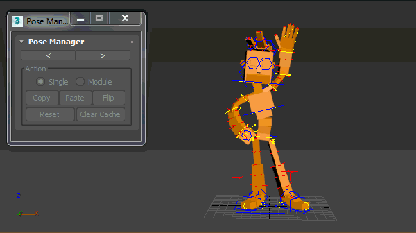
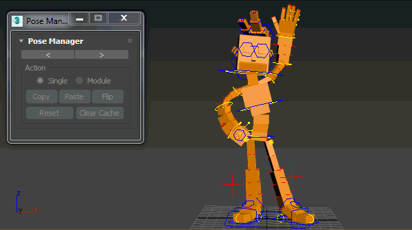

Pose Manager¶
Pose Manager allows animators to copy/paste/flip pose and reset transforms to their default values.
Pose Manager panel comes with update 1.5 allows animators to do all posing and reseting actions at once.
Note
Pose Manager only works with InstantRig.
Quick Start¶
- Launch:
Select root controller and click “Launch” from modifier stack “Pose Manager” panel. You can dock panel to left or right by pressing arrows top of panel.

{kind=link}
- Copy to other side:
Switch to module mode if it’s not. Select any controller from module which you need to copy then click copy. Select any controller from other module and paste your pose.

- Flip Pose:
Switch to module mode if it’s not. Select any controller from any arm or leg module which you want to flip then click flip.
Yes, you got warning message because ‘Flip’ doesn’t know which arm or leg mirrored. We need to define mirror limb. Select ngon shaped attribute control and select any controller of mirror limb.
Let’s give it an another try.
Do flip for the rest of rig. No need to define anything for spine and chain modules.

- Single Mode:
Switch to single mode if you want to copy and paste your own selections sets. Select controllers which you need to copy then click copy and paste your pose where you want to paste. Selection order is important. Select paste controllers same order where you copied from.

- Reset Single:
Select all controllers which you want to reset and click reset. On single mode, only selected controllers get back to their default values.

- Reset Module:
Only the module which has first selected controller will be resetted.

- Clear Cache:
- It removes last saved pose files. All files are stored at “your max project folder/sceneassets/animations” folder.